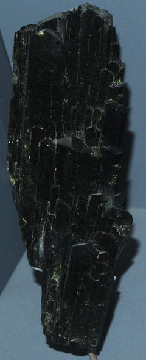
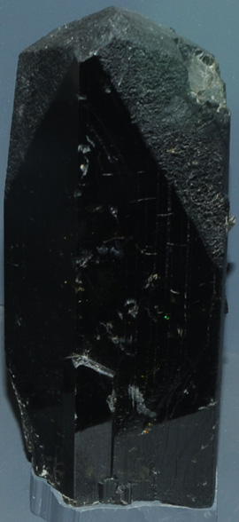
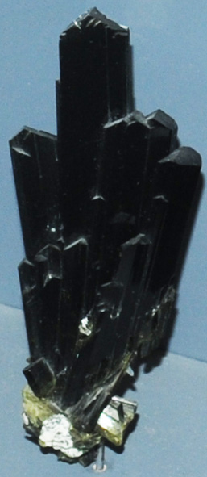

|  This sample is about 8x25 cm and is from Julie claim, Mineral County, Nevada.
|  The epidote sample is from Tulare County, California. It is about 8x20 cm and appears to be single crystal.
| 
This sample is from Untersulzbachtal, Salzburg, Austria. It is about 5x10 cm and is described as epidote with quartz.
|